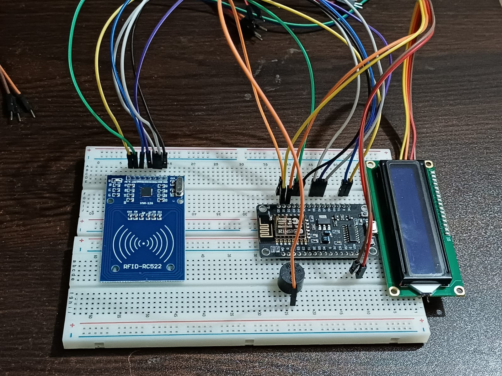
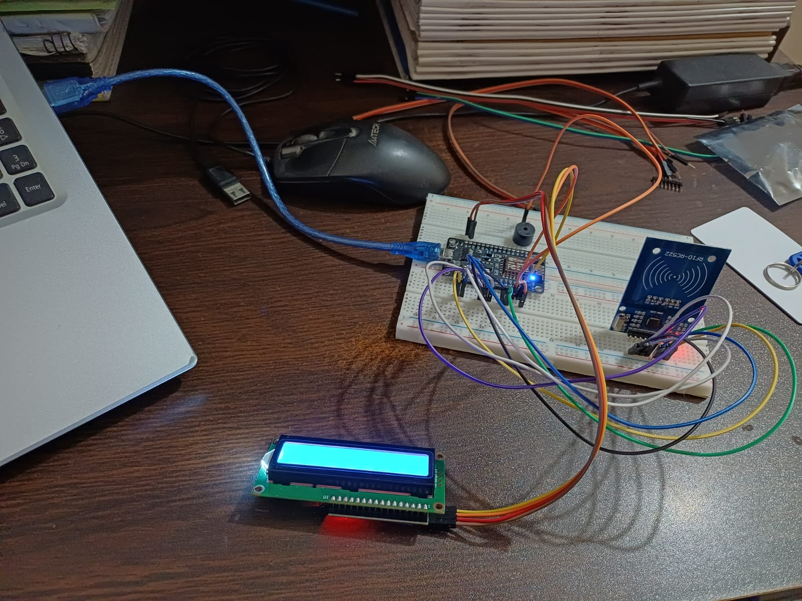
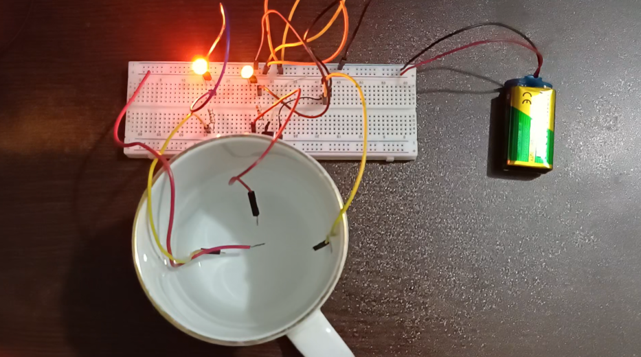

Things I've built, broken, and rebuilt again.


An automated, contactless RFID-Based Attendance System designed to streamline attendance tracking, eliminate manual paperwork, and prevent proxy attendance. The system allows users to log their presence instantly by tapping an RFID tag against a reader, processing and storing the data in real-time.
The system operates through a seamless hardware-to-software pipeline:
1. Authentication: Each user is assigned a unique RFID card/fob containing a specific identification number.
2. Data Capture: When the user taps their card against the RFID Reader, the reader scans the tag via radio frequency waves and extracts the unique ID.
3. Processing: A Microcontroller receives this ID, validates it, and attaches a precise timestamp to the log.
4. Data Management: The microcontroller sends this data to a database (local or cloud).
5. User Interface: A web or desktop dashboard displays the attendance logs in real-time, allowing administrators to view, filter, and export reports.
Hardware Components:
1. Microcontroller: Arduino Uno / ESP32 / NodeMCU (for Wi-Fi connectivity)
2. RFID Module: MFRC522 RFID Reader and matching 13.56 MHz tags
3. Indicators: LCD Display (16x2 I2C) for visual feedback (e.g., "Access Granted") and a Buzzer for audio confirmation.
Software & Database
1. Firmware: Embedded C++ / Arduino IDE
2. Backend & APIs: Python (Flask/FastAPI) or Node.js (if applicable)
3. Database: MySQL / Firebase (for real-time cloud tracking) / SQLite
4. Frontend Dashboard: HTML, CSS, JavaScript (or a Python Tkinter desktop app)

A water level detection system designed to monitor and manage water levels in tanks, reservoirs, or wells. The system uses sensors to measure water levels and provides real-time data to users, helping to prevent overflow, manage water resources efficiently, and ensure timely refilling.
The system operates purely through basic electrical principles and analog hardware without the need for programming or microcontrollers:
1. Sensing: Open wire probes (or contact points) are placed at different heights inside the water container to act as natural switches.
2. Conduction: Water, being conductive, acts as a bridge. As the water level rises and touches a specific probe, it completes an electrical circuit.
3. Processing: The completed circuit allows a small electric current from the battery to flow through a
current-limiting resistor directly into the base of a transistor (or directly to the LED, depending on your circuit design),
switching it on.
4. Visual Indication: Once the circuit is complete, the corresponding LED lights up instantly, giving a direct visual representation of the current water level (e.g., Low, Medium, High).
Hardware Components:
1. Power Source: 9V Battery to safely power the entire circuit.
2. Indicators: Colored LEDs (Light Emitting Diodes) to provide immediate visual feedback of the water levels.
3. Current Limiters: Resistors to protect the LEDs and control current flow across the probes.
4. Switching Components: BC547 Transistors (or similar NPN transistors, if used to amplify the signal to the LEDs).
5. Probes & Wiring: Copper wires or metallic contacts used inside the tank to detect the water surface.
Software & Database
1. Not Applicable: This is a 100% hardware-based, analog circuit project. No software, firmware, or databases
were required, showcasing fundamental electronics and circuit design.